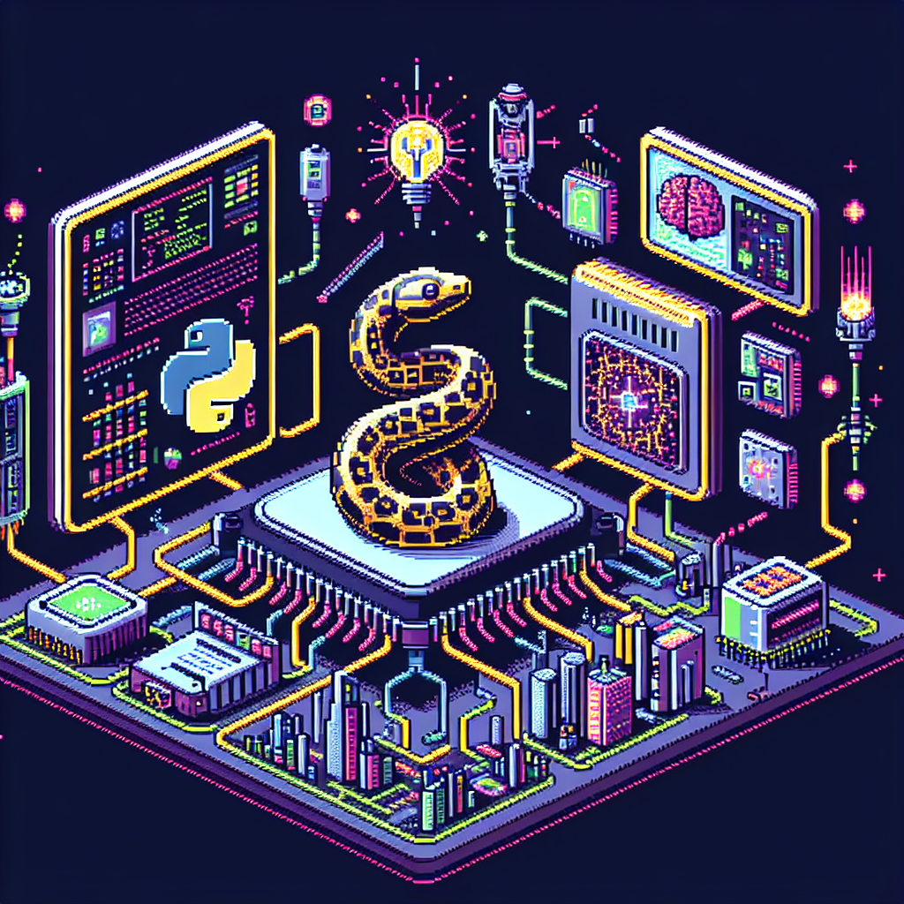

The future of Python and AI
Python has become one of the most popular programming languages in the world, and its versatility has made it a go-to choice for many developers working in the field of artificial intelligence (AI) and machine learning. As we look towards the future, it's clear that Python will continue to play a crucial role in the advancement of AI technology.
One of the main reasons Python has become so popular in the AI community is its simplicity and ease of use. The language was designed with readability and simplicity in mind, making it easy for both beginners and experienced programmers to pick up and start working with. This accessibility has helped to democratize AI development, allowing more people to get involved in the field and contribute to its growth.
As AI technology continues to evolve and become more sophisticated, Python will likely continue to be at the forefront of these advancements. The language's extensive library of tools and frameworks, such as TensorFlow and PyTorch, make it an ideal choice for developing AI applications. Additionally, Python's strong community support and active development community ensure that it will remain a relevant and powerful tool for AI development in the years to come.
In conclusion, the future of Python and AI looks bright. As technology continues to advance and AI becomes an increasingly integral part of our lives, Python will continue to be a key player in driving these advancements forward. So whether you're just starting out in the field of AI or you're a seasoned developer looking to expand your skills, Python is definitely a language worth mastering.